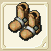
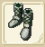
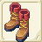
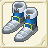
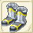

| ブーツ作成 | ||||
| 画像 | 名称 | 性能 | 材料 | |
| 台湾名表示 | 台湾名表示 | |||
| ブーツ作成Lv1 | ||||
| ソフトレザーブーツ | DEF+4〜+9 RSS+3〜+5 |
鹿の皮20 麻4 |
||
| 軟皮靴 | ||||
| レザーブーツ | DEF+7〜+14 RSS+1〜+3 |
銅7 鹿の皮20 |
||
| 皮靴 | ||||
| ブーツ作成Lv2 | ||||
|  | ハードレザーブーツ | DEF+10〜+19 RSS+6〜+10 |
銅5 鹿の皮20 木綿4 |
|
| 硬皮靴 | ||||
| ロングブーツ | DEF+13〜+24 RSS+2〜+6 |
銅3 鹿の皮20 麻3 木綿3 フェルト3 |
||
| 長靴 | ||||
| ブーツ作成Lv3 | ||||
| あつぞこブーツ | DEF+17〜+29 RSS+9〜+15 |
バルサ20 鹿の皮20 麻8 木綿4 フェルト3 |
||
| 厚底靴 | ||||
| あみあげブーツ | DEF+20〜+34 RSS+3〜+9 |
モミ20 鹿の皮20 麻5 フェルト9 コットン2 |
||
| 編織的靴子 | ||||
| ブーツ作成Lv4 | ||||
|  | チェイングリーブ | DEF+25〜+39 RSS+12〜+20 |
鉄6 銀6 麻6 コットン3 |
|
| 鎖?長靴 | ||||
| チェインブーツ | DEF+28〜+44 RSS+4〜+12 |
鉄8 銀3 純銀3 フェルト3 綿端3 |
||
| 鎖?靴 | ||||
| クイーンブレス | RCV+2〜+5 CRI-1〜+1 CTR-1〜+1 HIT-1〜+1 AVD-1〜+1 クエストで使用 |
純銀5 銀1 金1 チタン鉱石20 フローズンアイリス20 |
||
| ブーツ作成Lv5 | ||||
| スケイルブーツ | DEF+34〜+49 RSS+15〜+25 |
鉄10 金5 フェルト3 コットン3 |
||
| 蜥蝪靴 | ||||
| スケイルグリーブ | DEF+37〜+53 RSS+5〜+15 |
純銀5 金4 コットン5 綿端5 |
||
| 蜥蝪長靴 | ||||
|  | ゲッツブーツ | DEF+18 CRI+6 AVD-5 RSS+4〜10 |
絹3、綿端3 金2、鉄4、アルマイト3 |
|
| 防護靴 | ||||
| ブーツ作成Lv6 | ||||
| スティールブーツ | DEF+44〜+59 RSS+18〜+30 |
鉄20 白金5 | ||
| 鋼靴 | ||||
| スティールグリーブ | DEF+48〜+64 RSS+6〜+18 |
銀8 純銀7 白金7 | ||
| 鋼製長靴 | ||||
| ブーツ作成Lv7 | ||||
| マークタイム | DEF+? RSS+? |
鉄10 金8 ミスリル銅5 | ||
| 水晶靴 | ||||
| ナイトグリーブ | DEF+50〜+67 AGL+10 SLP+8 RSS+12 |
金5 白金5 ミスリル銅7 マイティナイト1 |
||
| 銀靴 | ||||
| 水龍の具足 | DEF+100 FP+150 CRI+5 HIT+5 |
ミスリル鋼10 マイティナイト2 魔族のクリスタル2 錆びたブーツ1 |
||
| 水龍之靴 | ||||
| ブーツ作成Lv8 | ||||
| ハニカムリング | DEF+64〜+84 RSS+? |
鉄4 純銀4 ミスリル銀5 セレーネ糸5 |
||
| 流水之靴 | ||||
| フレイムゲージ | DEF+30 CRI+4 CTR+4 RSS+16 |
ミスリル鋼10 ミスリル銀5 セレーネ糸5 フレイムスピリッツ1 |
||
| 芙蕾雅之靴 | ||||
| マークタイム＋ | DEF+60〜+70 AVD+1〜+3 RSS+20 |
ミスリル銀10 アルパネスクロス20 アルパネススリード5 永久氷石20 ブルードラゴンの鱗20 |
||
| 標準長靴+ | ||||
| ブーツ作成Lv9 | ||||
| アルカナスタンプス | DEF+?〜+94 RSS+? |
白金5 ミスリル鋼5 レグネシウム4 ジェノーバスリード5 |
||
| 鑽石靴 | ||||
| ガルーダスパイク | DEF+80 CRI+3 CTR+3 HIT+2 RSS+18 |
ミスリル銀10 レグネシウム5 隕石1 マイティナイト2 |
||
| 鑽石長靴 | ||||
| ブーツ作成Lv10 | ||||
| ディアナフロウ | DEF+90〜+97 RSS+43〜+47 |
金5 ミスリル鋼5 オリハルコン5 アルパネッサ5 |
||
| 秘密之靴 | ||||
| クラウディア | DEF+86 AGL+15 HIT+3 AVD+3 RSS+15 |
レグネシウム5 オリハルコン8 誓いの証1 マイティナイト5 |
||
| 龍之靴 | ||||
| ブーツ作成Lv11 | ||||
|  | カフリーブ | DEF+86〜102 AVD+11 RSS+20〜24 |
トネリコ40 オリハルコン2 レグネシウム3 ダマスクス鉱3 ドット家の布2 |
|
| 幸運靴 | ||||
|  | テスバイク | DEF+119〜135 CTR+7 RSS+52〜57 |
トネリコ40 アルマイト8 ミスリル銀15 ダマスクス鉱14 ランドクローラー甲殻2 |
|
| 試力鞋 | ||||